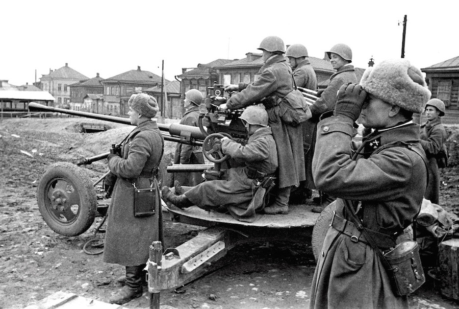

Тула — горад герой!
Да кастрычніка 1941 г. фашысцкім захопнікам, марыў захапіць Масквы, атрымалася даволі далёка рушыць наперад у глыб
Расіі, што тлумачылася вялікай перавагай ў жывой сіле і баявой тэхніцы.

Войскі генерала Гудэрыяна перад выхадам да Туле ўзялі горад Орёл, які быў заспеты ворагам знянацку. Да Тулы заставалася
ўсяго 180 км, прычым у горадзе не было ніякіх вайсковых частак, акрамя аднаго палка НКВД, які ахоўваў якія працуюць тут
на ўсю магутнасць абаронныя заводы, 732-га зенітна-артылерыйскага палка, які затуляе горад з паветра, і знішчальных
батальёнаў, якія складаюцца з рабочых і служачых.
43 ДНЯ
Тула знаходзілася ў асяроддзі
1156
вінтовак выраблена падчас аблогі горада

Фашысты кінулі на Тулу адборныя войскі: тры танкавыя і адну матарызаваную дывізіі і полк "Вялікая Нямеччына". Варожым сілам мужна супрацьстаяла рабочая гвардыя, а таксама чэкісты і зенітчыкі.
Нягледзячы на самыя жорсткія атакі, у якіх удзельнічала з боку праціўніка каля сотні танкаў, фашыстам так і не ўдалося прабіцца да Туле ні на адным участку фронту. Толькі за адзін дзень абаронцы горада здолелі знішчыць 31 варожы танк і вынішчыць шмат жывой сілы ворага.